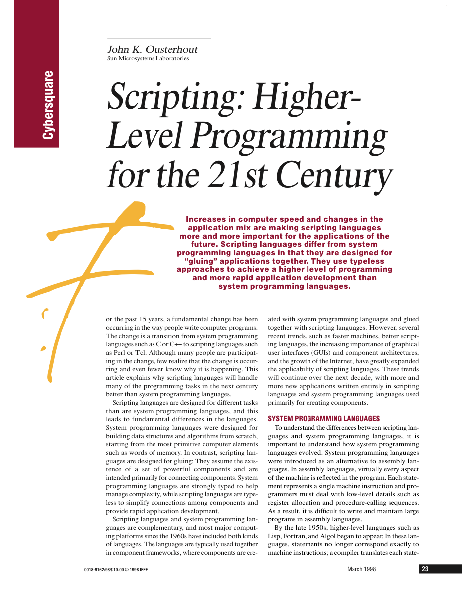
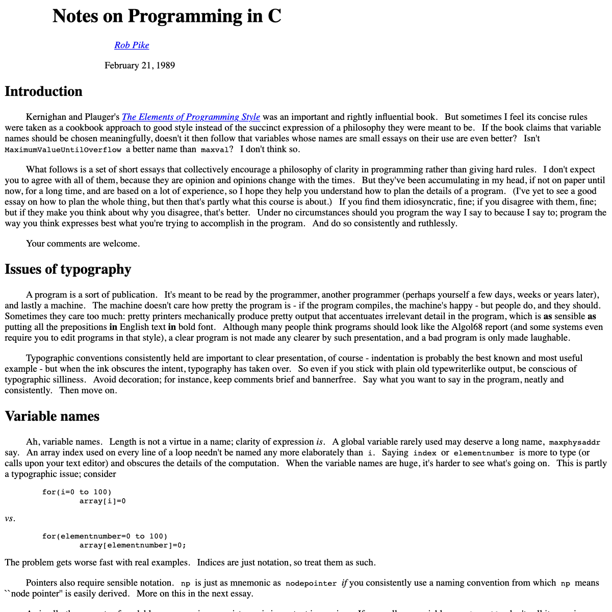
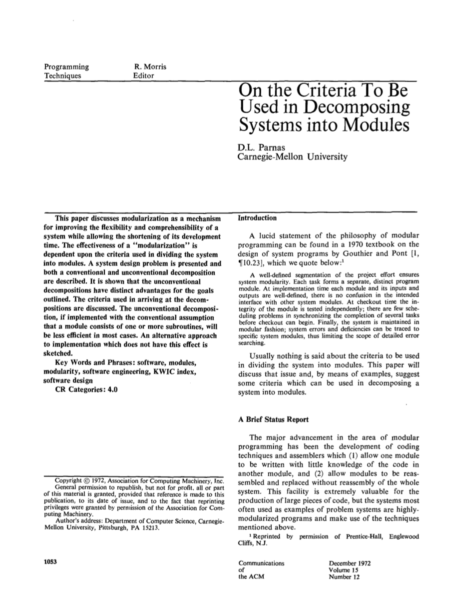
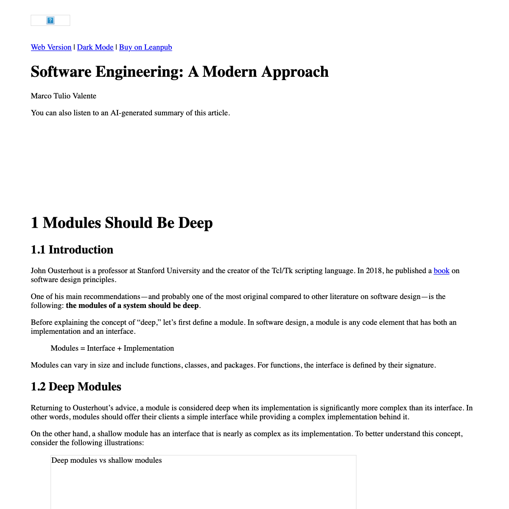
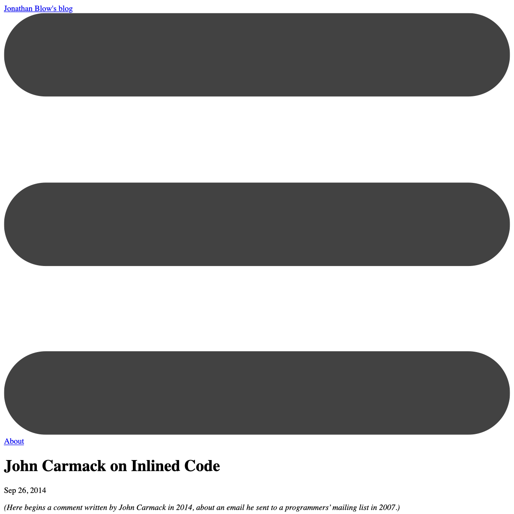
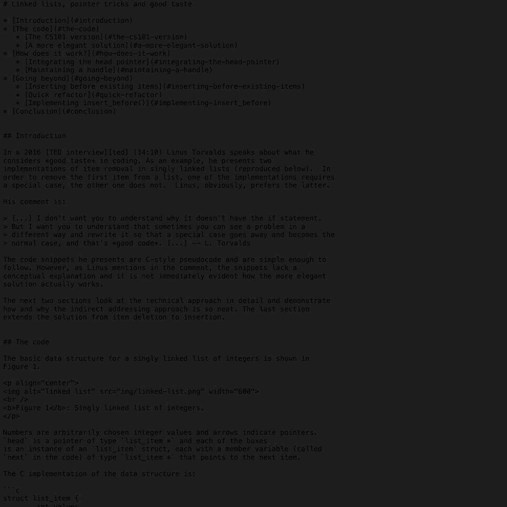

Tous

Scripting: Higher-Level Programming for the 21st Century
Notes on Programming in C
On the Criteria to Be Used in Decomposing Systems into Modules
Modules Should Be Deep
On Inlined Code
Linked Lists, Pointer Tricks and Good Taste